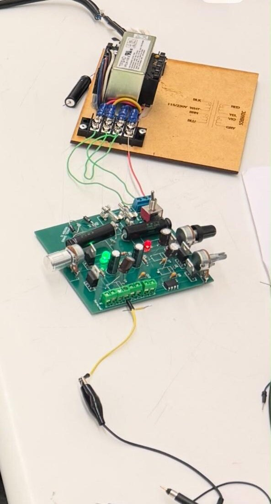
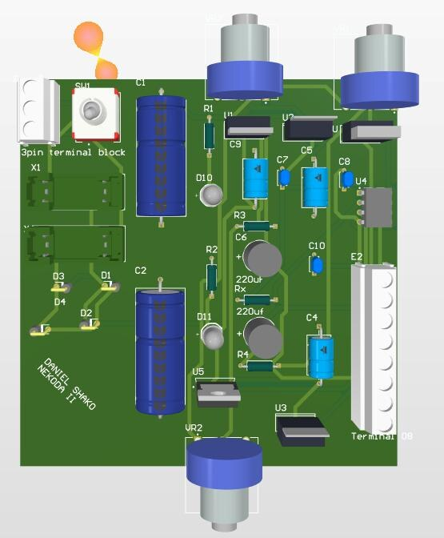
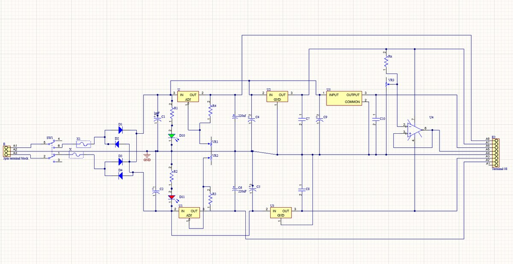
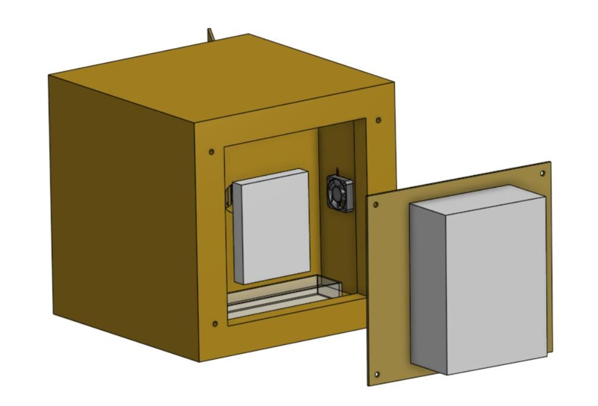
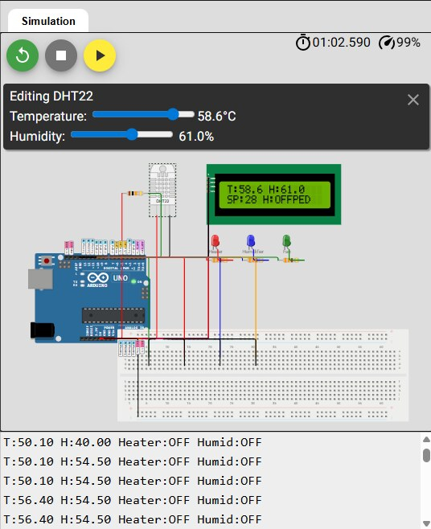
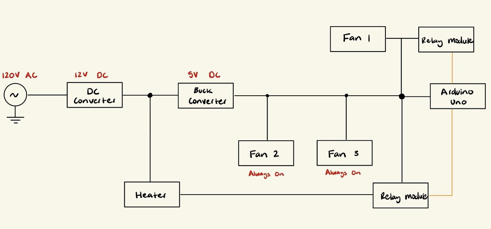

Electrical Engineering Student, Seattle Pacific University
About Me
I'm an Electrical Engineering student at Seattle Pacific University, graduating in June 2027.
I like projects where hardware and software meet: embedded systems, PCB design, and machine vision.
Last summer I built and deployed a production inspection system as an intern at Red Dot Corporation.
I'm looking for a full-time engineering role where I can work across hardware and software.
Experience
IT / Engineering Intern, Red Dot Corporation
Puyallup, WA | Jun 2026 to Sep 2026
Built and deployed a machine-vision inspection system for the production line, running on a Raspberry Pi 5 with a button-triggered global-shutter camera and a real-time Flask dashboard for operators.
Reached 96% defect-detection accuracy against an 80% acceptance target, across 4 inspection views and 4 defect classes.
Delivered the system for under $500 on a $3,000 budget, and owned the integration and debugging from the sensor up to the application.
Helpdesk Technician, Seattle Pacific University IT Support
Seattle, WA | Jul 2025 to Present
Resolved 300+ Jira tickets across a campus of 15+ buildings, diagnosing hardware and software issues.
Documented fixes in a shared knowledge base so the team could resolve repeat issues faster.
Projects
Autonomous Firefighting Robot
Senior Design Capstone | 5-person team | Sep 2026 to Present
A robot that drives to a fire inside a building, finds it, and puts it out with an onboard water tank and pump.
My part: fire detection and sensor integration, using a thermal camera and a heat sensor to locate the fire. I also work with the team on LiDAR navigation and the suppression system.
Dual Adjustable Power Supply PCB
EE 3721 Electronics I course project | Individual | Spring 2026

Assembled board on the bench

3D view in Altium

Full schematic
A bench power supply built from scratch: transformer input, bridge rectifier, filtering, then linear regulators
for fixed +12 V, -12 V, and +5 V rails plus adjustable outputs (LM317 / LM337).
What I did:
Designed the circuit and verified each stage in LTspice before layout.
Laid out the PCB in Altium, then hand-soldered and tested the board.
Measured the fixed rails on an oscilloscope at 12.19 V, 5.0 V, and -11.3 V.
Tracked down four board errors during testing, including a 7812 soldered in a 7912 position and reversed op-amp inputs. The adjustable stage still needs a second revision, and the main lesson was to review the schematic carefully before fabrication.
Humidity and Temperature Controlled Testing Chamber
Junior Design | 5-person team | Mar 2026 to Jun 2026

Housing CAD (team design)

Firmware simulation in Wokwi

Electrical schematic
An insulated chamber that holds a set temperature and humidity for testing electronics and materials.
An Arduino Uno reads a DHT22 sensor and switches a heater, fans, and a swamp cooler through relays.
What I did:
Wrote the Arduino firmware: sensor reading, rotary-encoder setpoints, I2C LCD display, and relay control with a deadband and an over-temperature shutoff.
Simulated the control logic in Wokwi before moving to hardware.
Debugged sensor, display, and relay faults during integration.
Test results: measured temperature within 1.64 °C and humidity within 3.7% RH, and reached setpoints up to 32 °C in under 10 minutes.
Sallen-Key IR Detection Filter
Analog filter design | LTspice, MATLAB, bench testing
Designed and implemented a two-stage Sallen-Key bandpass filter to detect a
25 kHz infrared signal while rejecting nearby frequencies. The system includes
a peak detector, comparator, and LED output indicator.
A home security prototype on a Pico Bricks board. A light sensor detects motion, a buzzer and an OLED
warning go off, and the user gets an "Intruder Alert!" message on their phone over an HC-05 Bluetooth module.
The system can be armed and disarmed from the phone with short Bluetooth commands.
Skills
Embedded and Hardware: Raspberry Pi, Arduino, GPIO / I2C / SPI, Altium PCB design and layout, hand soldering, oscilloscope, DMM, LTspice
Software: C/C++, Python, Verilog, MATLAB, OpenCV, Flask, Git, Linux
Power and Simulation: PSCAD, power-flow analysis, relay and sensor interfacing